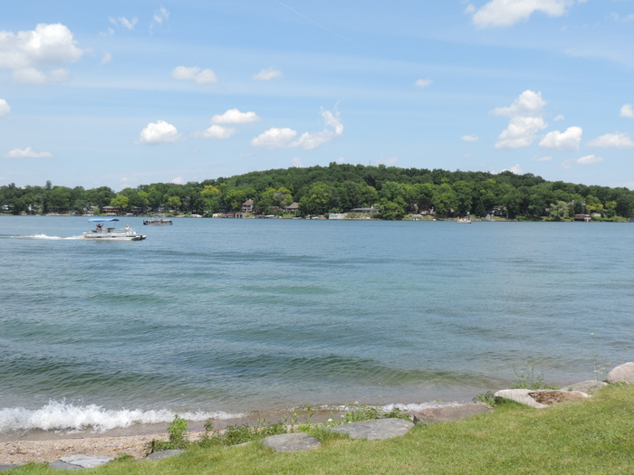

I have not always lived in Waterford. I grew up in White Lake, Michigan which is not far from Waterford. White Lake is a pretty
quite town not really a lot to say about it but it was home for 20 years of my life. I used to think that White Lake was the one
place that I couldn't wait to leave and move on from, but since moving several times and living in the state in different locations
I realize now that it was the best place I have lived and cannot wait to move back.
They say that you never know what you had until its gone. Well I can tell you that is the truth. I absolutely used to hate the
thought of living in one place my entire life, but now I see no wrong in that.
Having moved to Waterford I can tell you that it is a great place to live. There are tons of things to do and businesses that
make the area wonderful for raising a family. My wife and I really enjoy the neiborhood we live in. We live in a house at the end
of a street that once we found it we knew we wanted to start our lives together there. Don't get me wrong we lived several different
places before here but this one just felt right for now. If you ever find yourself in Waterford you give it a chance to show you
what it has to offer. Great food, nice people and if you find the right lake to spend some time at, you can find a great time.
